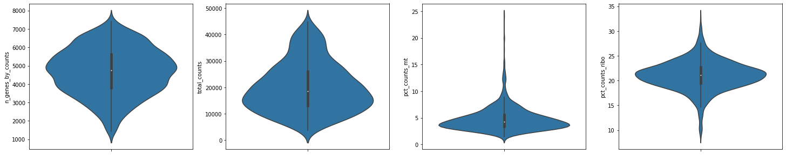
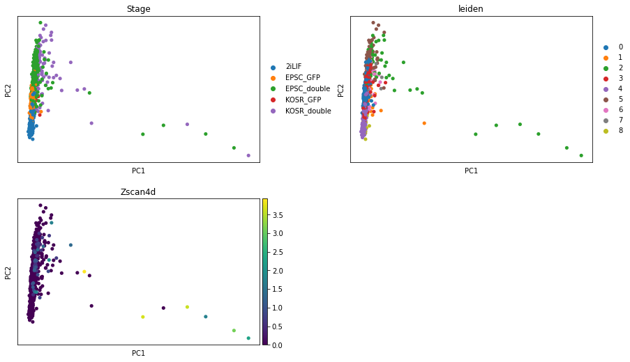

%matplotlib inline
import glob
import pandas as pd
import seaborn as sns
import numpy as np
import scanpy as sc
import matplotlib.pyplot as plt
from matplotlib.pyplot import rc_context10 - Re-running preprocessing
This notebook is to address the reviewer’s comments in regards to missing Sox2 expression in the scRNAseq.
from numba.core.errors import NumbaDeprecationWarning, NumbaPendingDeprecationWarning
import warnings
warnings.simplefilter('ignore', category=NumbaDeprecationWarning)
warnings.simplefilter('ignore', category=NumbaPendingDeprecationWarning)1 0. Original analysis
adata_orig = sc.read("../data/processed/01_dataset_MLA.h5ad")
adata_orig.obs.seurat_clusters = adata_orig.obs.seurat_clusters.astype('category')sc.pl.umap(adata_orig, color=['Stage', 'seurat_clusters', 'Phase'], ncols=3, frameon=False)2 1. Original Sox2 expression (bowtie2)
original = sc.concat([
sc.read_text(amp).T
for amp in glob.glob("../data/assays/SCR_20221006/processed/marsseq_16082023/output/umi.tab/*.txt")
])sc.pp.calculate_qc_metrics(original, inplace=True)original[:, 'Sox2'].var3 2. Re-aligned (StarSolo)
realigned = sc.read_10x_mtx("../data/assays/SCR_20221006/processed/marsseq/SB2/velocity/SB2.Solo.out/Gene/raw/")sc.pp.calculate_qc_metrics(realigned, inplace=True)realigned[:, 'Sox2'].var4 3. Re-aligned with eGFP (StarSolo)
It could be since MARSseq is a 3’ sequencing, that most of the sequence is eGFP tag and not the SOX2 sequence itself.
To solve this issue, we introduce eGFP sequence to the reference and compare the SOX2 vs SOX2_eGFP alignemnt. If it’s a sequencing issue we should see “recovered” counts from eGFP pseudogene.
realigned_eGFP = sc.read_10x_mtx("../data/assays/SCR_20221006/processed/marsseq_eGFP/SB2/velocity/SB2.Solo.out/Gene/raw/")sc.pp.calculate_qc_metrics(realigned_eGFP, inplace=True)realigned_eGFP[:, 'Sox2'].varsc.pp.normalize_total(realigned_eGFP)
sc.pp.log1p(realigned_eGFP)df = realigned_eGFP[:, ['Sox2', 'eGFP_Sox2_gene']].to_df()
fig, ax = plt.subplots(1, 2, sharey=True, sharex=True, figsize=[8, 3], constrained_layout=True)
_ = ax[0].hist(df['Sox2'], label='Sox2')
_ = ax[1].hist(df['eGFP_Sox2_gene'], label='Sox2 (eGFP)', color='orange')
_ = ax[0].legend()
_ = ax[1].legend()
_ = fig.supylabel('Counts')
_ = fig.supxlabel('Normalized & log-transformed gene expression')We can see that the eGFP couldn’t be detected, however the Sox2 expression has been recovered with StarSolo as already shown in Section 2.
5 4. Downstream re-analysis (eGFP)
# original
# adata = sc.read_10x_mtx("../data/assays/SCR_20221006/processed/marsseq_eGFP/SB2/velocity/SB2.Solo.out/Gene/raw/")
adata = sc.read_10x_mtx("../data/assays/SCR_20221006/processed/marsseq/SB2/velocity/SB2.Solo.out/Gene/raw/")
meta = pd.read_csv("../data/processed/00_metadata.csv", index_col=1)
meta['celltag'] = meta[['Pool_barcode', 'Cell_barcode']].agg(''.join, axis=1)
meta = meta.reset_index().set_index('celltag')
meta = meta[[
'Well_ID', 'Well_coordinates', 'plate_ID',
'Subject_ID', 'Amp_batch_ID', 'Cell_barcode', 'Pool_barcode',
'Batch', 'Condition', 'SampleName', 'Stage', 'Source', 'SubGroup',
'Group', 'Clone', 'All.Events.GFP-A.Geo.Mean', 'All.Events.561D-A.Geo.Mean']]
common_cells = adata.obs_names.intersection(meta.index)
adata = adata[common_cells].copy()
adata.obs = meta.loc[common_cells].copy()/tmp/ipykernel_2982839/2892087162.py:5: DtypeWarning: Columns (22,32,70,71,72,79,90,99,113,119,134,143,152,153,162,165,166,193,194,201,204,213,233,234,245,253,256,264,268,275,276,283,303,304,315,317,318,398,416,417,420,477,479,552,634,642,643,646,666,683,731,866,877,1041,1043,1062,1093,1094,1132,1134,1184,1186,1192,1254,1286,1295) have mixed types. Specify dtype option on import or set low_memory=False.
meta = pd.read_csv("../data/processed/00_metadata.csv", index_col=1)adataAnnData object with n_obs × n_vars = 1536 × 55359
obs: 'Well_ID', 'Well_coordinates', 'plate_ID', 'Subject_ID', 'Amp_batch_ID', 'Cell_barcode', 'Pool_barcode', 'Batch', 'Condition', 'SampleName', 'Stage', 'Source', 'SubGroup', 'Group', 'Clone', 'All.Events.GFP-A.Geo.Mean', 'All.Events.561D-A.Geo.Mean'
var: 'gene_ids', 'feature_types'adata.obs.plate_ID = adata.obs.plate_ID.astype('category')
# Remove Zero
adata = adata[adata.obs.Stage != 'Zero'].copy()
adata = adata[adata.obs.Stage != 'nEnd_double'].copy()
adata = adata[adata.obs.Stage != 'nEnd_GFP'].copy()
adata = adata[adata.obs.Stage != 'nEnd_cherry'].copy()
# Actually 2C, keep it
# cells_2C = ['AGTCTCGTGAG', 'CATGCATGGAT', 'CTACCAATGCG', 'CTACTCGATAC', 'TGATGAGCTAG', 'TGATTACGAGG']
# Remove ERCC cells
adata = adata[:, ~adata.var_names.str.startswith('ERCC-')]adata.var['mt'] = adata.var_names.str.startswith('mt-')
adata.var['ercc'] = adata.var_names.str.startswith('ERCC-')
adata.var['ribo'] = adata.var_names.str.startswith(('Rpl', 'Rps'))
sc.pp.calculate_qc_metrics(adata, qc_vars=['mt', 'ercc', 'ribo'], percent_top=None, log1p=False, inplace=True)/tmp/ipykernel_2982839/3810762444.py:1: ImplicitModificationWarning: Trying to modify attribute `.var` of view, initializing view as actual.
adata.var['mt'] = adata.var_names.str.startswith('mt-')fig, ax = plt.subplots(1, 3, figsize=(20, 5))
sns.violinplot(y=adata.obs['n_genes_by_counts'], orient='v', ax=ax[0])
sns.violinplot(y=adata.obs['total_counts'], orient='v', ax=ax[1])
sns.violinplot(y=adata.obs['pct_counts_mt'], orient='v', ax=ax[2])<AxesSubplot:ylabel='pct_counts_mt'>fig, ax = plt.subplots(1,3, figsize=(20, 5), sharey=True)
sns.scatterplot(x='total_counts', y='n_genes_by_counts', ax=ax[0], data=adata.obs, hue='Stage')
sns.scatterplot(x='total_counts', y='n_genes_by_counts', ax=ax[1], hue='pct_counts_mt', data=adata.obs)
sns.scatterplot(x='total_counts', y='n_genes_by_counts', ax=ax[2], hue='pct_counts_ribo', data=adata.obs)<AxesSubplot:xlabel='total_counts', ylabel='n_genes_by_counts'>min_cells, max_cells = 1000, 45e3
min_genes, max_genes = 1400, 7_500
p = sns.jointplot(x='total_counts', y='n_genes_by_counts', data=adata.obs, marginal_kws=dict(bins=100), height=10)
# min
p.ax_joint.axvline(x=min_cells, color='red')
p.ax_joint.axhline(y=min_genes, color='red')
# max
p.ax_joint.axvline(x=max_cells, color='green')
p.ax_joint.axhline(y=max_genes, color='green')<matplotlib.lines.Line2D at 0x14b75e477220>print(f'Before filtering: {adata.shape}')
sc.pp.filter_cells(adata, min_genes=min_genes)
sc.pp.filter_cells(adata, min_counts=min_cells)
sc.pp.filter_cells(adata, max_counts=max_cells)
sc.pp.filter_cells(adata, max_genes=max_genes)
# adata = adata[adata.obs.pct_counts_mt < 10].copy()
sc.pp.filter_genes(adata, min_cells=3)
print(f'After filtering: {adata.shape}')Before filtering: (1192, 55359)
After filtering: (1139, 21590)fig, ax = plt.subplots(1,4, figsize=(25, 5))
sns.violinplot(y=adata.obs['n_genes_by_counts'], orient='v', ax=ax[0])
sns.violinplot(y=adata.obs['total_counts'], orient='v', ax=ax[1])
sns.violinplot(y=adata.obs['pct_counts_mt'], orient='v', ax=ax[2])
sns.violinplot(y=adata.obs['pct_counts_ribo'], orient='v', ax=ax[3])<AxesSubplot:ylabel='pct_counts_ribo'>
adata.layers['counts'] = adata.X.copy()
sc.pp.normalize_total(adata)
sc.pp.log1p(adata)
adata.raw = adatasc.pp.highly_variable_genes(adata, flavor="seurat", batch_key="Amp_batch_ID")
# this works
# sc.pp.highly_variable_genes(adata, flavor="seurat", batch_key="plate_ID")
# sc.pp.highly_variable_genes(adata, flavor="seurat")
sc.pl.highly_variable_genes(adata)/projects/dan1/people/fdb589/envs/scvi-0.17.1/lib/python3.8/site-packages/scanpy/preprocessing/_highly_variable_genes.py:478: FutureWarning: The frame.append method is deprecated and will be removed from pandas in a future version. Use pandas.concat instead.
hvg = hvg.append(missing_hvg, ignore_index=True)
/projects/dan1/people/fdb589/envs/scvi-0.17.1/lib/python3.8/site-packages/scanpy/preprocessing/_highly_variable_genes.py:478: FutureWarning: The frame.append method is deprecated and will be removed from pandas in a future version. Use pandas.concat instead.
hvg = hvg.append(missing_hvg, ignore_index=True)
/projects/dan1/people/fdb589/envs/scvi-0.17.1/lib/python3.8/site-packages/scanpy/preprocessing/_highly_variable_genes.py:478: FutureWarning: The frame.append method is deprecated and will be removed from pandas in a future version. Use pandas.concat instead.
hvg = hvg.append(missing_hvg, ignore_index=True)
/projects/dan1/people/fdb589/envs/scvi-0.17.1/lib/python3.8/site-packages/scanpy/preprocessing/_highly_variable_genes.py:478: FutureWarning: The frame.append method is deprecated and will be removed from pandas in a future version. Use pandas.concat instead.
hvg = hvg.append(missing_hvg, ignore_index=True)
/projects/dan1/people/fdb589/envs/scvi-0.17.1/lib/python3.8/site-packages/scanpy/preprocessing/_highly_variable_genes.py:478: FutureWarning: The frame.append method is deprecated and will be removed from pandas in a future version. Use pandas.concat instead.
hvg = hvg.append(missing_hvg, ignore_index=True)
/projects/dan1/people/fdb589/envs/scvi-0.17.1/lib/python3.8/site-packages/scanpy/preprocessing/_highly_variable_genes.py:478: FutureWarning: The frame.append method is deprecated and will be removed from pandas in a future version. Use pandas.concat instead.
hvg = hvg.append(missing_hvg, ignore_index=True)
/projects/dan1/people/fdb589/envs/scvi-0.17.1/lib/python3.8/site-packages/scanpy/preprocessing/_highly_variable_genes.py:478: FutureWarning: The frame.append method is deprecated and will be removed from pandas in a future version. Use pandas.concat instead.
hvg = hvg.append(missing_hvg, ignore_index=True)
/projects/dan1/people/fdb589/envs/scvi-0.17.1/lib/python3.8/site-packages/scanpy/preprocessing/_highly_variable_genes.py:478: FutureWarning: The frame.append method is deprecated and will be removed from pandas in a future version. Use pandas.concat instead.
hvg = hvg.append(missing_hvg, ignore_index=True)adata[:, adata.var.highly_variable]View of AnnData object with n_obs × n_vars = 1139 × 2262
obs: 'Well_ID', 'Well_coordinates', 'plate_ID', 'Subject_ID', 'Amp_batch_ID', 'Cell_barcode', 'Pool_barcode', 'Batch', 'Condition', 'SampleName', 'Stage', 'Source', 'SubGroup', 'Group', 'Clone', 'All.Events.GFP-A.Geo.Mean', 'All.Events.561D-A.Geo.Mean', 'n_genes_by_counts', 'total_counts', 'total_counts_mt', 'pct_counts_mt', 'total_counts_ercc', 'pct_counts_ercc', 'total_counts_ribo', 'pct_counts_ribo', 'n_genes', 'n_counts'
var: 'gene_ids', 'feature_types', 'mt', 'ercc', 'ribo', 'n_cells_by_counts', 'mean_counts', 'pct_dropout_by_counts', 'total_counts', 'n_cells', 'highly_variable', 'means', 'dispersions', 'dispersions_norm', 'highly_variable_nbatches', 'highly_variable_intersection'
uns: 'log1p', 'hvg'
layers: 'counts'sc.pp.scale(adata)sc.tl.pca(adata)
sc.pl.pca_variance_ratio(adata, log=True)
# sc.pp.neighbors(adata, n_neighbors=10, n_pcs=15)
sc.pp.neighbors(adata)
sc.tl.leiden(adata)
sc.tl.umap(adata)# Verify 2C cells
sc.pl.pca(adata, color=["Stage", "leiden", 'Zscan4d'], ncols=2, wspace=0.25)
import urllib.request, json
cc_url = "https://github.com/brickmanlab/project-template/raw/master/%7B%7B%20cookiecutter.project_name%20%7D%7D/data/external/mouse_cell_cycle_genes.json"
with urllib.request.urlopen(cc_url) as url:
cc = json.load(url)
sc.tl.score_genes_cell_cycle(adata, s_genes=cc['s'], g2m_genes=cc['g2m'], use_raw=False)/projects/dan1/people/fdb589/envs/scvi-0.17.1/lib/python3.8/site-packages/scanpy/tools/_score_genes.py:151: FutureWarning: Passing a set as an indexer is deprecated and will raise in a future version. Use a list instead.
for cut in np.unique(obs_cut.loc[gene_list]):
/projects/dan1/people/fdb589/envs/scvi-0.17.1/lib/python3.8/site-packages/scanpy/tools/_score_genes.py:151: FutureWarning: Passing a set as an indexer is deprecated and will raise in a future version. Use a list instead.
for cut in np.unique(obs_cut.loc[gene_list]):cc_composition = adata.obs.groupby(['Stage', 'phase']).apply(len).unstack().fillna(0)
cc_composition /= cc_composition.sum(axis=1)[:, np.newaxis]
cc_composition *= 100
cc_composition.plot(kind='bar', stacked=True)
plt.gca().legend(title='CC phase', bbox_to_anchor=(0.99, 1.02), loc='upper left', frameon=False)
plt.gca().spines[['right', 'top']].set_visible(False)
_ = plt.xticks(rotation=45, ha='right')
_ = plt.ylabel('% Cell cycle')
_ = plt.xlabel('')/tmp/ipykernel_2982839/2422794942.py:2: FutureWarning: Support for multi-dimensional indexing (e.g. `obj[:, None]`) is deprecated and will be removed in a future version. Convert to a numpy array before indexing instead.
cc_composition /= cc_composition.sum(axis=1)[:, np.newaxis]adataAnnData object with n_obs × n_vars = 1139 × 21590
obs: 'Well_ID', 'Well_coordinates', 'plate_ID', 'Subject_ID', 'Amp_batch_ID', 'Cell_barcode', 'Pool_barcode', 'Batch', 'Condition', 'SampleName', 'Stage', 'Source', 'SubGroup', 'Group', 'Clone', 'All.Events.GFP-A.Geo.Mean', 'All.Events.561D-A.Geo.Mean', 'n_genes_by_counts', 'total_counts', 'total_counts_mt', 'pct_counts_mt', 'total_counts_ercc', 'pct_counts_ercc', 'total_counts_ribo', 'pct_counts_ribo', 'n_genes', 'n_counts', 'leiden', 'S_score', 'G2M_score', 'phase'
var: 'gene_ids', 'feature_types', 'mt', 'ercc', 'ribo', 'n_cells_by_counts', 'mean_counts', 'pct_dropout_by_counts', 'total_counts', 'n_cells', 'highly_variable', 'means', 'dispersions', 'dispersions_norm', 'highly_variable_nbatches', 'highly_variable_intersection', 'mean', 'std'
uns: 'log1p', 'hvg', 'pca', 'neighbors', 'leiden', 'umap', 'Stage_colors', 'leiden_colors'
obsm: 'X_pca', 'X_umap'
varm: 'PCs'
layers: 'counts'
obsp: 'distances', 'connectivities'sc.pl.umap(adata, color=['Stage', 'Amp_batch_ID', 'plate_ID', 'Zscan4d'], ncols=2, frameon=False)sc.tl.leiden(adata, resolution=0.4)sc.pl.umap(adata, color=['Stage', 'Amp_batch_ID', 'plate_ID', 'leiden'], ncols=2, frameon=False)5.1 Find co-expressing genes
We define co-expression where Sox2 ang Gata6 have their \(expr > 1.5\)
sc.pl.scatter(adata, x='Sox2', y='Gata6', color='Stage', use_raw=True)df = pd.DataFrame(
adata.raw[:, ['Sox2', 'Gata6']].X.A,
index=adata.obs_names,
columns=['Sox2', 'Gata6']
)
adata.obs['S2G6+'] = df.sum(axis=1) > 1.5
adata.obs['S2G6+'] = adata.obs['S2G6+'].astype('category')
adata.obs['S2G6+'] = adata.obs['S2G6+'].cat.rename_categories(['None', 'Co-expressed'])sc.pl.umap(adata, color=['Stage', 'leiden', 'Sox2', 'Gata6', 'Pou5f1', 'S2G6+',
'All.Events.GFP-A.Geo.Mean', 'All.Events.561D-A.Geo.Mean', 'pct_counts_ribo'], ncols=3, frameon=False)df = adata.obs.groupby(['Stage', 'S2G6+']).apply(len).unstack()
df = df / df.sum(axis=1).values[:, np.newaxis]
df *= 100
_ = df.plot.barh(title='% of SOX2+ and Gata6+', stacked=True)sc.pl.violin(adata, ['Sox2', 'Gata6'], groupby='Stage')sc.pl.dotplot(adata,
['Zscan4d', 'Tbx3', 'Dppa3', 'Fbxo15', 'Hhex', 'Gata6', 'Pdgfra', 'Zfp42', 'Klf4', 'Fgf4', 'Otx2', 'Etv5'],
categories_order=['EPSC_GFP', 'EPSC_double', 'KOSR_double', 'KOSR_GFP', '2iLIF'],
groupby='Stage', standard_scale='var')sc.tl.rank_genes_groups(adata, groupby='Stage')WARNING: Default of the method has been changed to 't-test' from 't-test_overestim_var'markers = sc.get.rank_genes_groups_df(adata, group=None).query('logfoldchanges > 1.5 & pvals_adj < 0.05')
markers.to_csv("../results/10_Stage_markers_v2.csv")
markers| group | names | scores | logfoldchanges | pvals | pvals_adj | |
|---|---|---|---|---|---|---|
| 0 | 2iLIF | Mt1 | 30.182755 | 3.066576 | 8.542602e-84 | 6.147826e-80 |
| 1 | 2iLIF | Mt2 | 28.141783 | 3.261517 | 2.455703e-76 | 1.060372e-72 |
| 2 | 2iLIF | Tdh | 21.773829 | 2.652163 | 9.045173e-56 | 1.952853e-52 |
| 3 | 2iLIF | Grsf1 | 20.289968 | 2.326869 | 3.291700e-51 | 5.922317e-48 |
| 4 | 2iLIF | Ifitm1 | 18.542225 | 2.322205 | 6.579498e-47 | 8.355962e-44 |
| ... | ... | ... | ... | ... | ... | ... |
| 87549 | KOSR_double | Ptpn22 | 2.753461 | 1.977904 | 6.140028e-03 | 4.659515e-02 |
| 87560 | KOSR_double | Rbp2 | 2.739320 | 2.380432 | 6.417906e-03 | 4.812872e-02 |
| 87562 | KOSR_double | Tns4 | 2.736088 | 2.442743 | 6.487625e-03 | 4.851673e-02 |
| 87566 | KOSR_double | Hsd11b2 | 2.732192 | 2.305900 | 6.551203e-03 | 4.885682e-02 |
| 87572 | KOSR_double | Begain | 2.726239 | 1.956147 | 6.649286e-03 | 4.940058e-02 |
617 rows × 6 columns
markers = sc.get.rank_genes_groups_df(adata, group=None).query('logfoldchanges > 1 & pvals_adj < 0.05')
markers.to_csv("../results/10_Stage_markers_logfold_1_v2.csv")
markers| group | names | scores | logfoldchanges | pvals | pvals_adj | |
|---|---|---|---|---|---|---|
| 0 | 2iLIF | Mt1 | 30.182755 | 3.066576 | 8.542602e-84 | 6.147826e-80 |
| 1 | 2iLIF | Mt2 | 28.141783 | 3.261517 | 2.455703e-76 | 1.060372e-72 |
| 2 | 2iLIF | Tdh | 21.773829 | 2.652163 | 9.045173e-56 | 1.952853e-52 |
| 3 | 2iLIF | Grsf1 | 20.289968 | 2.326869 | 3.291700e-51 | 5.922317e-48 |
| 4 | 2iLIF | Ifitm1 | 18.542225 | 2.322205 | 6.579498e-47 | 8.355962e-44 |
| ... | ... | ... | ... | ... | ... | ... |
| 87560 | KOSR_double | Rbp2 | 2.739320 | 2.380432 | 6.417906e-03 | 4.812872e-02 |
| 87562 | KOSR_double | Tns4 | 2.736088 | 2.442743 | 6.487625e-03 | 4.851673e-02 |
| 87566 | KOSR_double | Hsd11b2 | 2.732192 | 2.305900 | 6.551203e-03 | 4.885682e-02 |
| 87569 | KOSR_double | RP23-48M16.13 | 2.731624 | 1.498198 | 6.531738e-03 | 4.874533e-02 |
| 87572 | KOSR_double | Begain | 2.726239 | 1.956147 | 6.649286e-03 | 4.940058e-02 |
1435 rows × 6 columns
sc.pl.rank_genes_groups_matrixplot(adata, n_genes=5, cmap='bwr')WARNING: dendrogram data not found (using key=dendrogram_Stage). Running `sc.tl.dendrogram` with default parameters. For fine tuning it is recommended to run `sc.tl.dendrogram` independently.
sc.pl.correlation_matrix(adata, 'Stage', figsize=(5,3.5), show_correlation_numbers=True)adata.write("../data/processed/10_dataset_v2.h5ad")